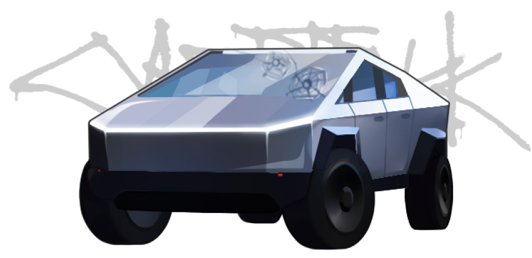

BETTER UTILITY THAN A TRUCK WITH MORE PERFORMANCE THAN A SPORTS CAR
EXOSKELETON
Cybertruck is built with an exterior shell made for ultimate durability and passenger
protection. Starting with a nearly impenetrable exoskeleton, every component is designed for
superior
strength and endurance, from Ultra-Hard 30X Cold-Rolled stainless-steel structural skin to Tesla
armor
glass.
 1.png)
 1 (1).png)
ULTRA-HARD 30X COLD-ROLLED STAINLESS STEEL
If there was something better, we’d use it. Help eliminate dents, damage and long-term
corrosion with a smooth monochrome exoskeleton that puts the shell on the outside of the car and
provides you and your passengers maximum protection.
VERSATILE UTILITY
With up to 3,500 pounds of payload capacity and adjustable air suspension, Cybertruck
is
the most powerful tool we have ever built, engineered with 100 cubic feet of exterior, lockable
storage
— including a magic tonneau cover that is strong enough to stand on.

VAULT-LIKE STORAGE
Space for your toolbox, tire and Cyberquad, with room to spare. Utilize 100 cubic feet
of exterior, lockable storage — including the under-bed, frunk and sail pillars.

PERFORMANCE AND EFFICIENCY
Now entering a new class of strength, speed and versatility—only possible with an
all-electric design. The powerful drivetrain and low center of gravity provides extraordinary
traction control and torque—enabling acceleration from 0-60 mph in as little as 2.9 seconds and up
to 500 miles of range.

